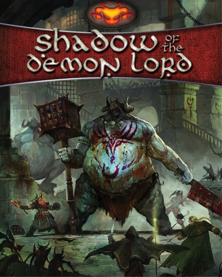

Dark fantasy · Horror RPG
Shadow of the Demon Lord
A dark fantasy roleplaying game about unlikely adventurers confronting a world on the brink of destruction.

Official cover source ↗
What's it like?
The Demon Lord's shadow falls over a world battered by war, plague, and supernatural horrors. Your group ventures into dangerous places, confronts monstrous enemies, and decides what is worth saving. The core book includes character creation, the game rules, creatures, and guidance for running adventures.
Why I'm considering it
It could be a good choice when we want a darker atmosphere and difficult choices. The mix of fantasy adventure and horror gives us room for desperate victories, strange mysteries, and memorable characters.